神秘的北纬30度：诡异的千古不解之谜
在地球北纬30度附近，有许多神秘而诡异的自然现象。如美国的密西西比河、埃及的尼罗河、伊拉克的幼发拉底河、中国的长江等，均在北纬30度入海。地球上最高的珠穆朗玛峰和最深的西太平洋马里亚纳海沟，也在北纬30度附近。
沿地球北纬30°线前行，眼前既有许多奇妙的自然景观，又存在着许多令人难解的神秘怪异现象，正是这些饱含着地球文明资讯的现象让我长年处于极度兴奋的梦魇之中。
在这一纬度线上，奇观绝景比比皆是，自然迷团频频发生，如中国的钱塘江大潮、安徽的黄山、江西的庐山、四川的峨眉山、巴比伦的“空中花园”、约旦的“死海”、古埃及的金字塔及狮身人面像、北非撒哈拉大沙漠的“火神火种”壁画、加勒比海的百慕大群岛和远古玛雅文明遗址……可以说，在北纬30度线附近或在这一纬度线上，奇事怪事，数不胜数。
打开地图你会惊奇地发现，古代文明古国竟然都是在北纬三十度
首先让我们先来看下中国的北纬30度上也有这么多神奇的现象，看来真是“不探不知道，一探吓一跳”了。
神秘基因，谜窟破谜，日月并升的奥秘，神农架的白熊白鹿野人之谜，三星堆又是何人的杰作？种种奇景数不胜数，这么多奇物怪事一齐分布于北纬30度这个区域，仅仅是因为巧合？还是有什么玄妙的“天机”呢？
1、神龙架野人之谜
神秘的北纬30°线，链接着一串串绚丽多彩、慑人心魄的世界自然之谜——百慕大三角、埃及金字塔、诺亚方舟、撒哈拉大沙漠、珠穆朗玛峰……，神农架野人之谜也令人注目地串在这条神秘纬线上。
神农架位于湖北省西部边陲，地跨东经109°56′--110°58′，北纬31°15′--31°75′，总面积3253平方公里。
很多年以来，一个神秘的影子一直笼罩在神农架当地人的脑海中，挥之不去。谁也说不清它到底是什么，人们都在口口相传着一个名字，“野人”。
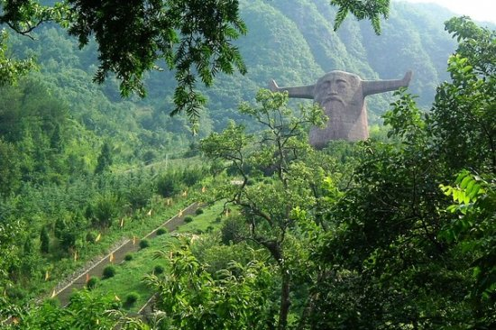
同样位于北纬三十度的神龙架
神龙架野人(想象图)
野人之谜，世界许多地方都有报道，但大都渐渐销声匿迹，惟独神农架至今仍然不断有野人目击消息频频传来，或许是这里的生态环境更神奇，或许是这里的人文关怀更亲切，或许是它们眷顾这片生息久远的故土家园？正是由于它们的眷顾，更为这条地球上最亮丽的风景线平添了几分神秘壮美的色彩。
2、安徽千古迷窟
在安徽省黄山市新安江屯溪段下游南岸连绵群山中，林木葱郁，环溪矗立的山间有36座(处)古石窟，洞中空间奇大，结构怪异，有的层层叠岩，洞中套洞；有的水波荡漾，迂回通幽；有的石柱擎天，奇幻神秘。
洞中无壁画、无佛像、无文字。其中被命名为35号的石窟，洞深170米，面积1.2万平方米，仅掘出的十几万立方米石料，就足以铺就成一条由黄山市通往杭州市的公路。
与大自然的杰作黄山比肩为伴，相映成辉，与埃及金字塔、百慕大三角、诺亚方舟等世界上诸多鬼斧神工的神景奇观一道，都处恰好在北纬30度这条神秘线上。
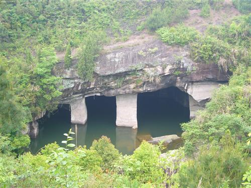
花山谜窟为何人开凿，用途如何等等谜团千百年来无人能知
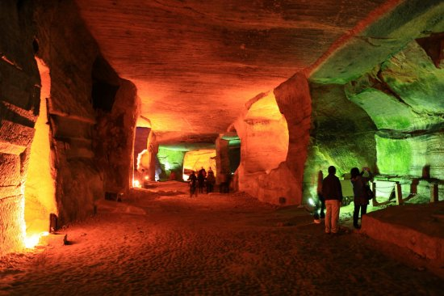
3、鄱阳湖“魔鬼三角”
1945年4月16日，2000多吨级的日本运输船“神户丸”行驶到江西鄱阳湖西北老爷庙水域突然无声无息地失踪(沉入湖底)，船上200余人无一逃生。其后，日本海军曾派人潜入湖中侦察，下水的人中除山下堤昭外，其他人员全部神秘失踪。山下堤昭脱下潜水服后，精神恐惧，接着就精神失常了。
抗战胜利后，美国着名的潜水专家爱德华·波尔一行人来到鄱阳湖，历经数月的打捞仍一无所获，除爱德华·波尔外，几名美国潜水员再度在这里失踪。
鄱阳湖“魔鬼三角”
几名美国潜水员在这里离奇失踪
过去了40年后，爱德华·波尔终于向世人首次披露了他在鄱阳湖底失魂落魄的经历。他说：“几天内，我和三个伙伴在水下几公里的水域内搜寻”神户丸“号，没有发现一点踪迹。这一庞然大物究竟在哪里？正当我们沿着湖底继续向西北方向寻去时，忽然不远处闪出一道耀眼的白光，飞快向我们射来。顿时平静的湖底出现了剧烈的震动，耳边呼啸如雷的巨响隆隆滚来，一股强大的吸引力将我们紧紧吸住，我头晕眼花，白光在湖底翻卷滚动，我的三个潜水伙伴随着白光的吸引逐流而去，我挣扎出了水面……”
4、三番五次骚扰的怪火
在江西鄱阳湖畔的波阳县(原为鄱阳县)莲湖乡朱家村，村民朱满善、朱松善家里无缘无故地不断发生火灾，火星红色，线型走状，每次起火都很奇怪，易燃的东西没烧着，难燃的物体偏偏着火，而且火势无论多大，每次浇上一点水即灭。
1995年3月23日至4月6日，朱家已发生大大小小不明原因的火灾20多起。
三番五次骚扰的怪火
5、长江两次突然断流
长江的地理范围介于北纬28°45′～33°25′之间，公认6300公里，目前实为6211.3公里的中国长江，历史上记录了它两次突然枯竭的史实，令人费解不已。
公元1342年，江苏省泰兴县(现在泰兴市)内，千万年从未断流的长江水一夜之间忽然枯竭见底，次日沿岸居民纷纷下江拾取遗物。突然江潮骤然而至，淹死了很多人。
1954年1月13日下午4时许，这一奇怪现象在泰兴县再度出现。当时，天色苍黄，江水突然出现枯竭断流，江上的航轮搁浅，历经两个多小时，江水汹涌而下……
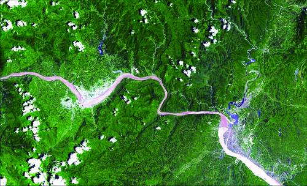
公元1342年，长江水一夜之间忽然枯竭见底
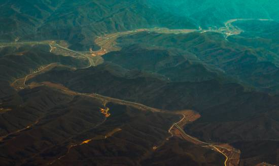
看过中国北纬30度这些神秘千古谜团，然后我们再来看一下世界范围内北纬三十度发生的无数离奇的事件。
第一：【人文奇观】
1、玛雅文明
玛雅文明是拉丁美洲古代印第安人文明，约形成于公元前2500年。玛雅时期的建筑工程达到了现在世界的最高水平，玛雅文明也已掌握了日食周期和日、月、金星的运动规律。
自从1839年美国人约翰·斯蒂芬斯在洪都拉斯的热带丛林第一次发现玛雅古文明遗址以来，世界各国考古人员在中美的丛林和荒原上共发现了170多处被弃的玛雅古代城市遗迹，，玛雅人的文明足迹北起墨西哥的尤卡坦半岛，南至危地马拉、洪都拉斯，直达安第斯山脉。这个神秘的民族在南美的热带丛林建造了一座座规模令人咋舌的巨型建筑。
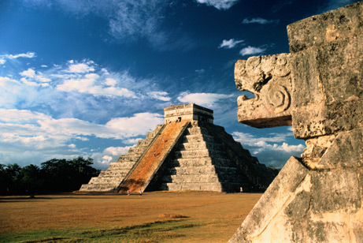
2、埃及金字塔
大金字塔(胡夫金字塔)建塔共用200多万块巨石，每块都经过精雕细琢，连最薄的纸都插不进石缝，最小石块重2吨半。金字塔附近数百英里范围，竟然难以找到类似的石头。包含了诸多丰富的天文知识和数学知识。
埃及金字塔是世界八大奇迹之一。埃及金字塔塔址点正好选在沙漠中岩石地域V型裂缝之间，塔中心正好位于地球各大洲的引力中心，穿过大金字塔(胡夫金字塔)的子午线正好把洲和洋分成相等的两半。
塔底为正方形，四边正好对着东南西北四个方向，偏差只有0.015%。塔高的10亿倍正好是地球到太阳的距离；塔重6000万吨* 1015 =地球重量；塔底周长/(塔高* 2)=圆周率π(3.14159)；塔内部的直角在角形厅室，各边之比为3:4:5，体现了勾股定理的数值；塔底边长230.6米，是361.31比特（埃及度量单位），这大约是1年的天数；塔底面正方形的纵平分线延伸至无穷无处，刚好是地球的子午线，而且这条纵平分线不但把地球上的陆地和海洋恰好分成了两半，也把尼罗河口三角洲平分成了两半；
金字塔到底是外星文明还是史前文明，目前我们还不得而知。

3、空中花园
是古代世界七大奇迹之一。公元前6世纪，由新巴比伦王国的尼布甲尼撒二世在巴比伦城为其患思乡病的王妃安美依迪丝修建的，现已不存于世。据传，空中花园采用立体造园手法，将花园放在四层平台之上，由沥青及砖块建成，平台由25米高的柱子支撑，并且有灌溉系统，奴隶不停地推动连系着齿轮的把手。园中种植各种花草树木，远看犹如花园悬在半空中。
令人称奇的是，在巴比伦文献中，空中花园始终是一个谜，甚至没有一篇提及空中花园。
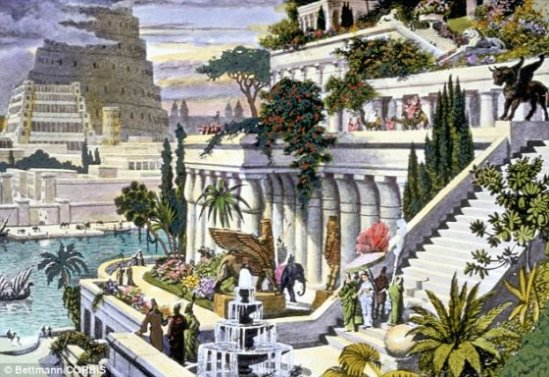
4、三星堆文明
出四川广汉约三四公里，有三座突兀在成都平原上的黄土堆，三星堆因此而得名。1929年春，当地农民燕道诚在宅旁挖水沟时，发现了一坑精美的玉器，由此拉开三星堆文明的研究序幕。1986年，三星堆两个商代大型祭祀坑的发现，上千件稀世之宝赫然显世，轰动了世界，被誉为世界“第九大奇迹”。
三星堆文化来自何方？这里数量庞大的青铜人像、动物不归属于中原青铜器的任何一类。青铜器上没有留下一个文字，简直让人不可思议。
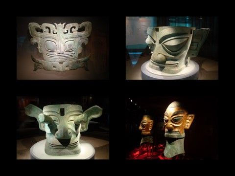
第二：【自然奇观】
1、世界最高：珠穆朗玛峰
珠穆朗玛峰是喜马拉雅山脉的主峰，位于东经86.9度，北纬27.9度，我国和尼泊尔交界的喜马拉雅山脉之上，终年积雪。高度8844.43米，为世界第一高峰。珠峰山体呈巨型金字塔状，威武雄壮昂首天外，地形极端险峻，环境异常复杂。
珠穆朗玛峰
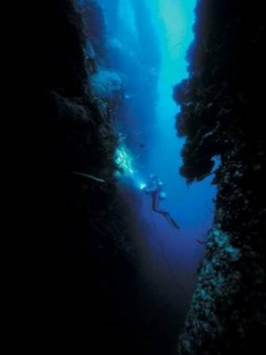
3、世界上最低的湖泊，最深的咸水湖、最咸的湖：死海
死海，位于以色列、约旦和巴勒斯坦交界，是世界上最低的湖泊，湖面海拔负422米，死海的湖岸是地球上已露出陆地的最低点，湖长67公里，宽18公里，面积大约810平方公里。
死海也是世界上最深的咸水湖、最咸的湖，最深处380米，最深处湖床海拔-800米，湖水盐度达300克/升，为一般海水的8.6倍。也是地球上盐分居第二位的水体，只有吉布提的阿萨勒湖(Lake Assal)的盐度超过死海，位于巴勒斯坦、西岸和约旦之间的大裂谷约旦裂谷。
死海
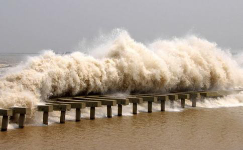
第三：【神秘事件】
1、百慕大魔鬼三角区
百慕大是一个奇怪的地方。在这里不明不白失事的飞机多达数十架，轮船100多艘，不仅如此，百慕大还出现过许多穿越时间隧道失踪，而又突然出现，且”使人年轻“的传闻。
在全球，当人们一提到百慕大，就会感到毛骨悚然，一个科学团体认为，此处可能有一个巨大的陨石。据研究，约1500年前，有一个巨大的陨石从太空飞来，掉入大西洋。这块大陨石犹如一个大黑洞，具有极大的吸引力，连光线也能吸引进去，何况飞机、轮船。墨西哥半岛上的伯利兹也曾经飞落过一颗陨石，摧毁了地球上万物生灵，其尘埃在地球上空弥漫十年之久。百慕大离伯利兹不远，是否是受双重影响也不得而知。
如果陨石造成百慕大魔鬼三角区的论点成立的话，那么北纬30度一线附近的种种怪异现象是否也可用陨石论的观点来解释。

百慕大魔鬼三角区
百慕大魔鬼三角区
西方着名科学家赫尔比格曾提出过一个令人惊叹的理论，地球在其46亿年的历程中，先后捕获了4颗卫星，即4个月亮。这4个月亮恰好跟地球的4个地质年代相符合，同地球4次大变动相印证。我们今天看到的月球是地球的第四颗卫星，前三颗由于在运行中离地球太近，最后都坠落了。在坠落到地球赤道偏北附近三个地方之前，他们发生了爆炸，摧毁了世界上万物之灵，地球变形了，形成了太平洋、印度洋和大西洋，三颗月亮落地中心除印度洋以外，其他两颗硕大的月球都是在北纬30度附近，不仅形成了三大洋，其地球内部地核结构也发生了剧烈的变化，使地球自转和绕太阳公转的轨道均呈倾斜。
但也有人认为，地球运转轨道呈斜形是面积217.56万平方米的格陵兰岛亿万冰雪融化导致地球失去重心所造成。还有人认为，地球运行呈斜形(往西北方倾斜)并非上述两大原因所致，而是地球的卫星月亮在起作用。因为月亮始终是绕地球转的，地球被月亮牵制住了。众说纷纭，但这些说法与神秘的北纬30度主题都离得较远。
2、那不勒斯“死亡谷”
在意大利的那不勒斯和瓦勒尔湖附近，有两处“死亡谷”，只危及飞禽走兽，而对人的生命却没有威胁。每年在上述“死亡谷”丧命的各种动物多达3万多头(只)，是世界上破坏生态平衡的最大“原凶”。
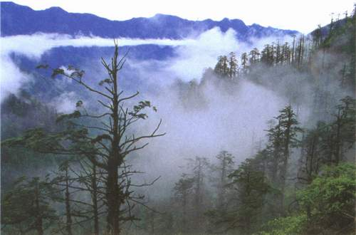
那不勒斯“死亡谷”
3、巴别通天塔
地处幼发拉底河东岸的巴比伦城，距伊拉克首都巴格达南约100余公里。这里矗立着一座年岁久远的”巴别“塔，当地人称之为”埃特曼南基“，意为”天地的基本住所“。但是，为什么要建造通天塔呢？它是奴隶制君主的陵墓，还是古代的天文观测之地？至今没有人能回答。
4、比萨斜塔千年不倒
坐落在意大利北部佛罗伦萨市的比萨斜塔至今已有828年历史。此塔建至一半以上高度时就开始倾斜，斜度为1.2至1.5米，已饱经风霜820年，有望创下”千年不倒“甚至”万年健在“的记录。
比萨斜塔千年不倒
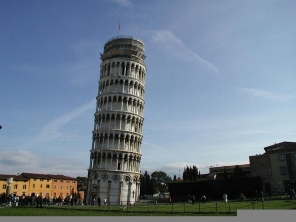
5、加州“死亡谷”
在美国加利福尼亚与内华达州相毗邻的山中，也有一条长达225公里，宽度在6至26公里，面积达1400平方公里的”死亡谷“，峡谷两侧悬崖峭壁，异常森严。
1949年美国有一支寻找金矿的勘探队，因迷失方向而误入此谷，几乎全军覆没。有几个人侥幸脱险爬出，之后不久也不明不白地死去。此后，也曾有多批探险人员前去揭谜，除大多数葬身此谷外，幸存者也未能揭开这个迷。
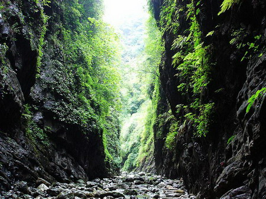
加州“死亡谷”
6、踩在三叶虫上的足印
1938年美国肯塔基州柏里学院地质系主任柏洛兹博士宣布，他在石炭纪砂岩中发现10个类人动物的脚印。显微照片和红外线照片证明，这些脚印是人足压力自然造成，而非人工雕刻。据估计，有人足痕迹的这些岩石约有二点五亿年历史。
更早一些时候，有人在美国圣路易市密西西比河西岸一块岩石上，曾发现过一对人类脚印。据地质学家判断，这块岩石约有二点七亿年历史。
最为奇特的发现，是在美国犹他州羚羊泉。业余化石爱好者米斯特于1968年6月发现了几块三叶虫化石。他叙述说，当他用地质锤轻轻敲开一块石片时，石片“像书本一样打开，我吃惊地发现，一片上面有一个人的脚印，中央处踩着三叶虫，另一片上也显出几乎完整无缺的脚印形状。更令人奇怪的是，那几个人穿着便鞋！”
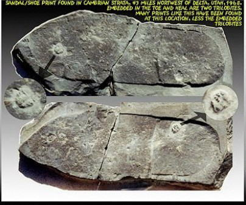
踩在三叶虫上的足印
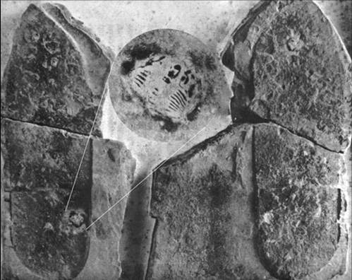
踩在三叶虫上的足印
之后，1968年7月，地质学名家伯狄克博士亲往羚羊泉考察，又发现了一个小孩的脚印。1968年8月，盐湖城公立学校的一位教育工作者华特，又在含有三叶虫化石的同一块岩石中发现了两个穿鞋子的人类足迹。
所有这些发现，经有关学者鉴定，均认为令人无法怀疑，是对传统地质学的严重挑战。犹他州大学地球科学博物馆馆长马迪生，在记者招待会上说，那时候”地球上没有人类，也没有可以造成近似人类脚印的猴子、熊或大懒兽，那么，在连脊椎动物也未演化出来之前，有什么似人的动物会在这个星球上行走呢？“
三叶虫是细小的海洋无脊椎动物，与虾蟹同类。在地球上存在时间从6亿年前开始，至2.8亿年前灭绝。而人类出现的历史与之相比，很短，至于穿上像样的鞋子不过三千多年。这一切，又该作何解释？
7、动植物一边倒的神秘地带
在神秘北纬30度附近的美国加利福尼亚州圣塔柯斯小镇的郊外，有一个神秘地带，这里是一个片茂密的树林，所有的大树都向同一个方向大幅度倾斜，人也毫不例外，人进入此处无论如何也无法垂直站立，身子竟会不由自主地与树木向同一个方向倾斜而不跌到，且还能稳步如飞，不费力地行走，即使从空中落下的物体，包括鸟类也都往一个方向倾斜，神秘地带出现的种种怪异现象，完全违反了牛顿的万有引力定律。
动植物一边倒的神秘地带

马耳他岛上的轨迹
8、马耳他岛上的轨迹
面积为316平方公里的地中海中部岛国马耳他，有一条奇特的轨迹，凹槽深度达72厘米，一直延伸到地中海中深达42米的地方，说它是车轨吧，但它又显示出明显不同的辙印，从古到今，产生过关于轨迹的20多种猜想，无一能成立。